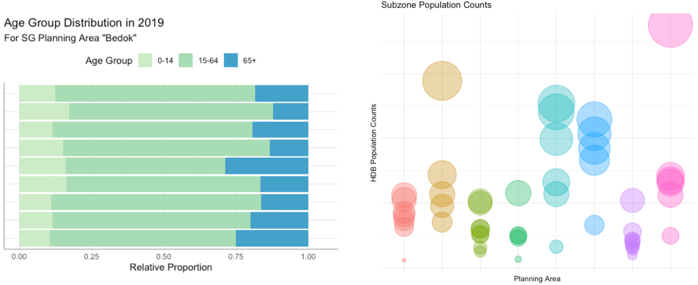
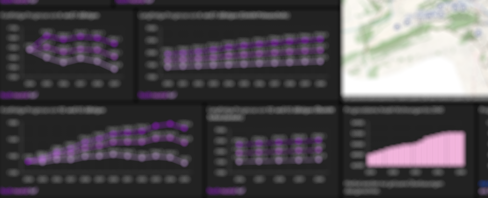
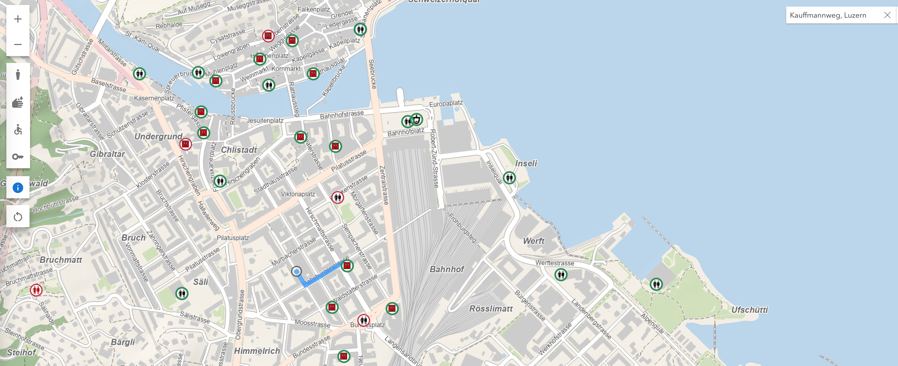
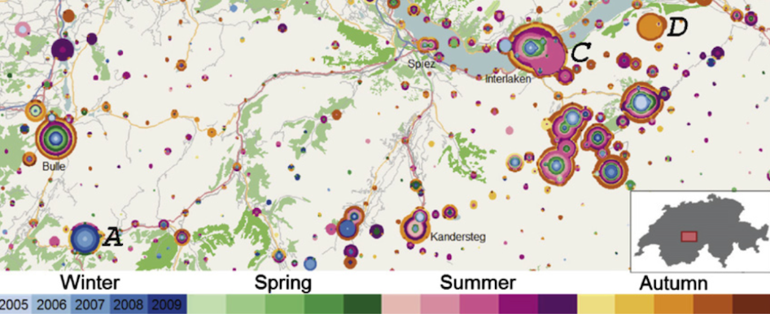
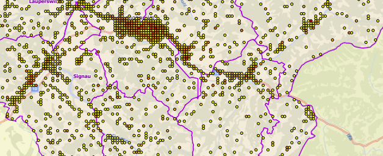
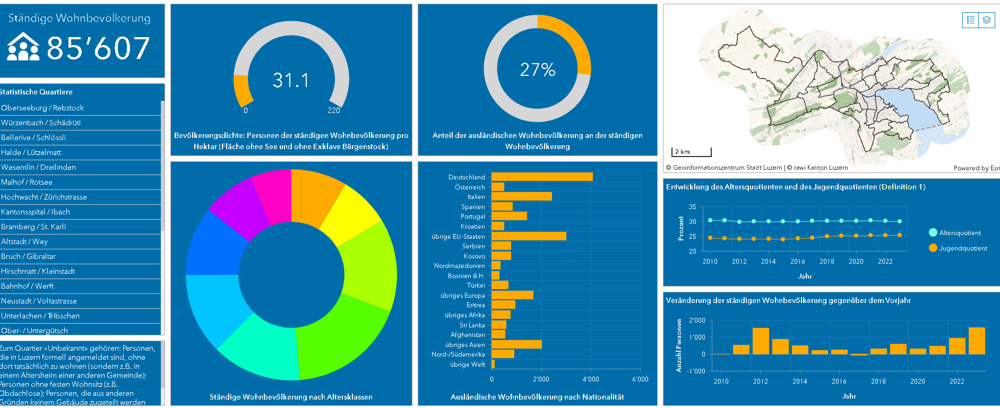
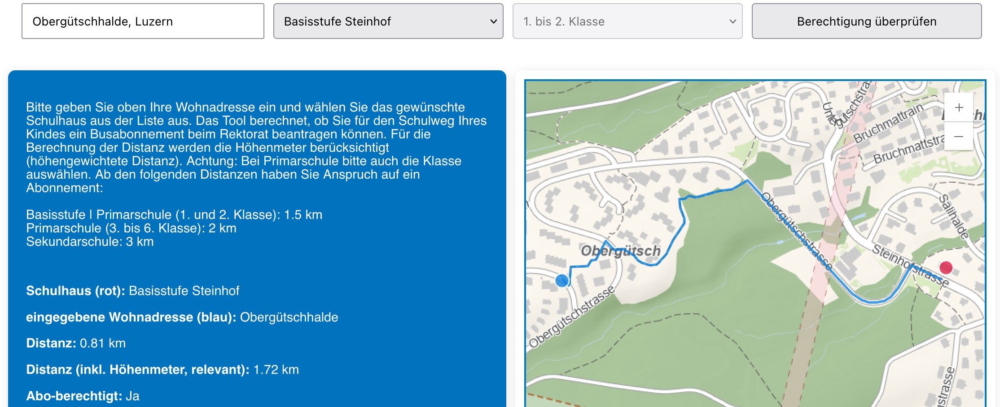
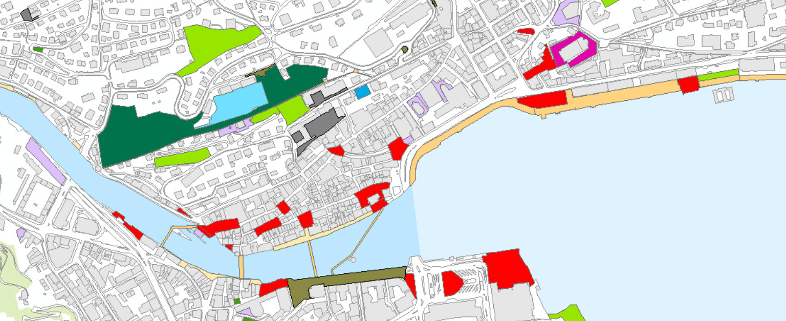

-

Population estimation beyond counts—Inferring demographic characteristics (MSc Thesis, The University of Edinburgh|National University of Singapore, veröffentlicht)
Machine-Learning-Algorithmen, um Bevölkerungszahlen sowie demographische Gruppen in Nachbarschaften von Singapur anhand von Points-of-Interest sowie Immobiliendaten zu bestimmen.
R Studio, QGIS
-

Rollende Schulraumplanung
Prädiktive Vorhersage von zukünftigen Kinder-Verteilungen in spezifischen Schulkreisen, welche die Entscheidungsträger*innen der Stadt Luzern in der langfristigen Schulplanung unterstützt. Aggregiert verschiedene Datenquellen und ML-Algorithmen, um Abweichungen zwischen Kinderzahlen und Raumangebot frühzeitig zu erkennen.
Python (jupyter, pandas, geopandas, ArcGIS API for Python, shapely), ArcGIS Pro, ArcGIS Portal
-

WC-App Stadt Luzern
Eine öffentliche, progressive Web-Mapping-Applikation, welche Einhemische sowie Tourist*innen zu den nächsten verfügbaren Toiletten führt.
ArcGIS API for JavaScript, React, ArcGIS Pro
-

Geovisual Analytics - Techniques to visualise movement (BSc Thesis, University of Zurich)
Eine umfassende Analyse (Literatur-Review) über den aktuellen Stand der Forschung in der Geovisuellen Analytik von raumzeitlichen Daten, inklusive eines Rahmenwerks für verschiedene Anwendungen.
-

Standort-Analyse (Location Intelligence)
Fahrzeitenanalyse für eine externe Pflegeorganisation, um die Anbindung zu den Kundinnen und Kunden zu optimieren. Zusätzlich demographische Analysen und Vorhersagen zum Kundenstamm.
Python (pandas, matplotlib), ArcGIS Pro
-

Dashboards zur Registerstatistik der Stadt Luzern
Interaktive Dashboards, welche die Entwicklung der Wohnbevölkerung und Wohnsituation in der Stadt Luzern über einen längeren Zeitraum für einzelne Stadtquartiere visualisieren.
ArcGIS Dashboard, ArcGIS Pro
-

Schulwegberechnung
Ein öffentliches Tool, welches Eltern die Möglichkeit gibt, den Schulweg ihrer Schulkinder zu berechnen. Anhand der höhengewichteten Distanz wird automatisch bestimmt, ob ein Anrecht auf ein Abonnement der öffentlichen Verkehrsmittel besteht.
ArcGIS API for JavaScript, React, ArcGIS Pro
-

Open Government Data
Management und Weiterentwicklung des internen Geometadatentools inkl. automatisiertem Harvesting auf Geocat und Opendata Swiss.
PostgreSQL, FRM, Python